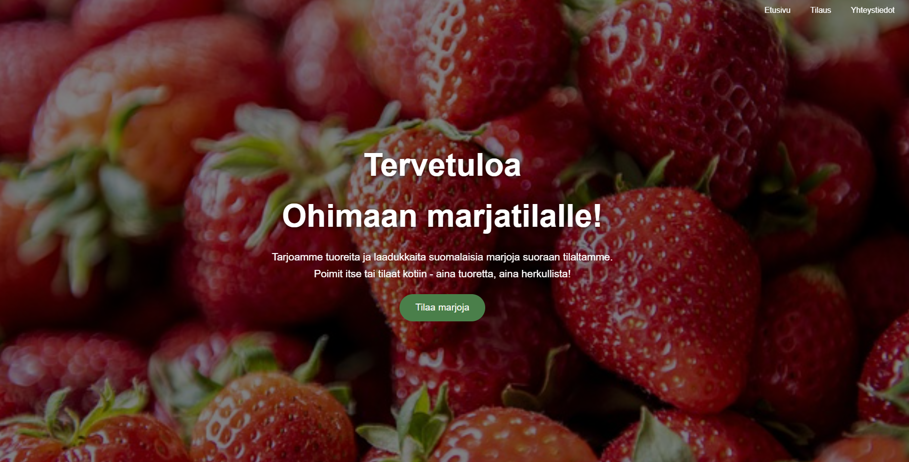
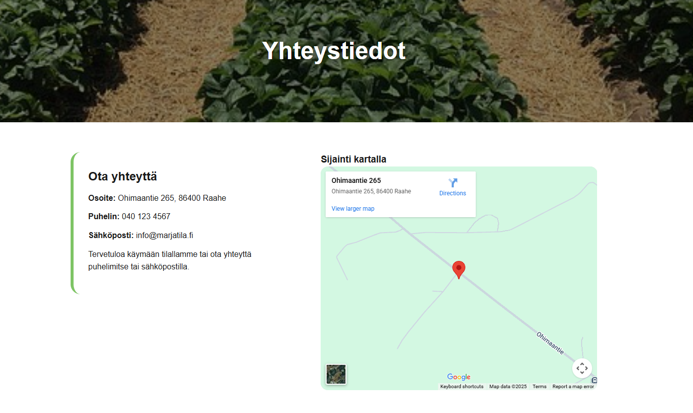

Ohimaan Marjatila
Yrityksen kotisivu & tilauslomake | HTML + CSS + JavaScript
Kuvaus
Kotisivu marjatilalle, tilauslomakkeella ja Google Maps -sijaintikartalla.
Roolini ja toteutus
Suunnittelin raikkaan ja kotimaisuutta korostavan visuaalisen ilmeen, toteutin tilauslomakkeen ja huolehdin responsiivisuudesta.
Keskeiset ominaisuudet
- Tilauslomake
- Google Maps -integraatio
- Yritysilmeen mukainen visuaalinen rakenne
Opitut asiat
Opin lisää verkkosivujen rakenteesta, saavutettavuudesta ja käytettävyydestä sekä tilauslomakkeen rakentamisesta.
Teknologiat
HTML, CSS, JavaScript

